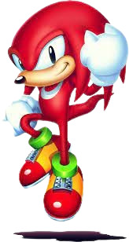

Knuckles Facts
Discover interesting facts about the powerful echidna, Knuckles!
Knuckles the Echidna Facts
Knuckles is the guardian of the Master Emerald, a powerful gemstone in the Sonic universe.
He is known for his powerful punches and climbing abilities.
He can glide and swim, making him adept at exploring various terrains.
His first appearance was in the game "Sonic the Hedgehog 3" released in 1994.
Sonic
has a rivalry with him but ultimately teams up with him to save the day.
He is one of the core members of Team Sonic, alongside
Tails
and
Sonic
.
